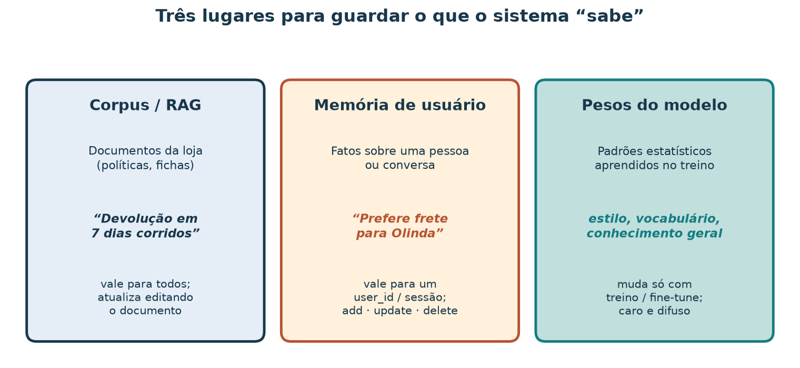
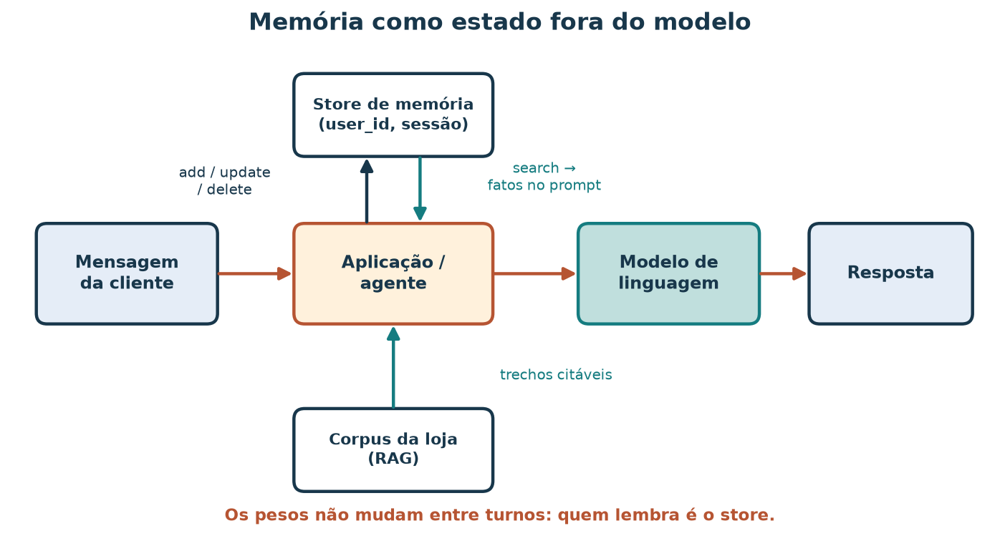
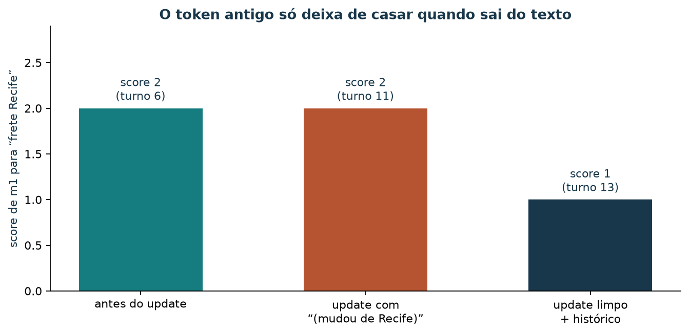

Memória de agentes: lembrar preferências entre turnos no padrão Mem0
Leia a versão web com o explorador incorporado.
Uma cliente volta ao chat da loja de artesanato e escreve: “quero o mesmo frete da outra vez”. Ela já tinha contado que recebe as compras em Recife, que não gosta de peças de palha e que gasta no máximo uns R$ 150. Um modelo de linguagem não guarda nada disso entre conversas: seus pesos são os mesmos para todas as pessoas e não mudam quando alguém fala com ele. Para o atendimento lembrar, a aplicação precisa guardar fatos sobre a cliente fora do modelo, recuperá-los na hora certa, corrigi-los quando mudam e apagá-los quando ela pedir.
Ao concluir esta aula, você deverá conseguir distinguir memória de
usuário, corpus documental e pesos do modelo; usar as quatro operações
add, search, update e
delete; explicar escopos de usuário e de sessão; calcular à
mão a pontuação de busca do laboratório; reconhecer por que uma memória
atualizada ainda pode casar com o valor antigo; e justificar o que
não guardar à luz da LGPD.
O laboratório usa um store JSON local com a mesma forma de operações do Mem0, biblioteca de código aberto (Apache-2.0) para memória de aplicações com modelos de linguagem. A busca do laboratório conta palavras em comum; o Mem0 real usa um modelo de linguagem para extrair fatos e embeddings para buscar por semelhança. Os dados são sintéticos e os resultados demonstram o mecanismo, e não a qualidade de uma memória em produção.
Roteiro de estudo
| Tempo sugerido | Atividade |
|---|---|
| 8 min | Separar memória, corpus e pesos |
| 10 min | Vocabulário: memória, escopo e as quatro operações |
| 10 min | Calcular a pontuação de busca à mão |
| 15 min | Rodar a linha do tempo de 16 turnos e ler o store |
| 10 min | Entender o token antigo e uma política de atualização |
| 15 min | Explorar turnos e buscas no painel |
| 7 min | Privacidade: o que não guardar e como apagar |
| 10 min | Exercício com resolução comentada |
1. Três lugares para guardar o que o sistema “sabe”

Figura 1 — A pergunta que decide o lugar é “para quem este fato vale e quem pode mudá-lo?”. Uma política de devolução vale para todos os clientes; uma preferência de frete vale para uma pessoa; um estilo de escrita está espalhado nos pesos.
| Lugar | Guarda | Exemplo nesta loja | Como muda |
|---|---|---|---|
| Corpus documental (RAG) | Políticas e fichas | “7 dias corridos para devolução” | Editando o Markdown e reindexando |
| Memória de usuário | Preferências e fatos de uma pessoa ou conversa | “Prefere frete para Olinda” | add, update, delete em tempo
de execução |
| Pesos do modelo | Padrões estatísticos aprendidos | Vocabulário, estilo, conhecimento geral | Treino ou ajuste fino, offline e caro |
Misturar os lugares causa erros previsíveis. Uma regra de frete grátis gravada como memória de uma cliente vale só para ela e envelhece sem ninguém perceber quando a política muda. Uma preferência pessoal colocada no corpus aparece para todo mundo.
2. Memória como estado fora do modelo
Na IA, um agente é um sistema que recebe uma situação, decide uma ação e a executa, muitas vezes em vários passos. Quando o agente usa um modelo de linguagem, a parte que lembra é o estado mantido pela aplicação.

Figura 2 — A aplicação escreve no store (add,
update, delete) e lê dele
(search) a cada turno. Os fatos recuperados viajam no
prompt; o modelo não é retreinado.
Vocabulário
| Termo | Definição nesta aula |
|---|---|
| Memória | Um registro curto em linguagem natural sobre um usuário, com
id, user_id, texto e datas |
| Store | Onde as memórias ficam; aqui,
material/memoria/store_preferencias.json |
| Escopo de usuário | A memória pertence a um user_id e só aparece em buscas
desse usuário |
| Escopo de sessão | A memória também tem session_id e só aparece naquela
conversa |
| Escopo de agente | No Mem0, memórias podem pertencer a um agent_id (o que
o próprio agente aprendeu); o laboratório não usa |
add |
Cria uma memória nova |
search |
Devolve as memórias visíveis ao escopo, ordenadas por pontuação |
update |
Substitui o texto de uma memória existente pelo id |
delete |
Remove a memória do store |
3. A pontuação de busca do laboratório
O script demo_mem0_preferencias.py
pontua cada memória por sobreposição de tokens. A
consulta
é convertida em minúsculas e quebrada em tokens nos caracteres que não
são letras, dígitos ou sublinhado; chame essa lista de
.
Para uma memória de texto
,
em que
vale 1 quando a condição é verdadeira e 0 caso contrário. A busca
considera só as memórias visíveis ao escopo: mesmo
user_id e, se a memória tiver sessão, a mesma
session_id. Ela devolve as memórias com
,
em ordem decrescente.
Minúcia. Consulta “frete Recife”, .
| Memória | “frete” aparece? | “recife” aparece? | |
|---|---|---|---|
| Cliente prefere frete para Recife. | sim | sim | 2 |
| Não gosta de peças de palha. | não | não | 0 |
| Cliente prefere frete para Olinda (mudou de Recife). | sim | sim | 2 |
| Cliente prefere frete para Olinda. | sim | não | 1 |
O teste é “aparece como trecho”, e não “é a mesma palavra”. Uma
consulta com o token o casaria com quase todas as memórias,
e rec casaria com “Recife”. Essa simplicidade é deliberada:
você consegue conferir cada número à mão. O Mem0 real compara
embeddings, vetores numéricos que aproximam o sentido
do texto, e por isso encontra “mora em Olinda” para a consulta “endereço
de entrega”, coisa que a contagem de tokens não faz.
4. Linha do tempo: 16 turnos, dois usuários, uma sessão
Rode na raiz do repositório:
uv run python scripts/demo_mem0_preferencias.py --roteiroSaída esperada no terminal:
1 add → Cliente prefere frete para Recife.
2 add → Não gosta de peças de palha.
3 add → Orçamento máximo cerca de R$ 150.
4 add → Hoje procura presente para a mãe.
5 add → Cliente prefere frete para Caruaru.
6 search frete Recife → [('m1', 2)]
7 search frete → [('m5', 1)]
8 search presente mãe → []
9 search presente mãe → [('m4', 2)]
10 update → Cliente prefere frete para Olinda (mudou de Recife).
11 search frete Recife → [('m1', 2)]
12 update → Cliente prefere frete para Olinda.
13 search frete Recife → [('m1', 1)]
14 search frete Olinda → [('m1', 2)]
15 delete → True
16 search palha → []O arquivo memoria/linha-do-tempo.json
guarda, para cada turno, a ação, o escopo, o resultado e o store
completo depois do turno.
| Turno | Ação | Escopo | O que aconteceu | Por quê |
|---|---|---|---|---|
| 1–3 | add |
aluno_demo |
m1 frete Recife, m2 sem palha,
m3 orçamento |
Fatos duráveis da cliente |
| 4 | add |
aluno_demo, sessão s1 |
m4 presente para a mãe |
Vale só nesta conversa |
| 5 | add |
outra_cliente |
m5 frete Caruaru |
Outra pessoa |
| 6 | search “frete Recife” |
aluno_demo |
m1 com
|
Os dois tokens aparecem |
| 7 | search “frete” |
outra_cliente |
só m5,
|
m1 pertence a outro user_id |
| 8 | search “presente mãe” |
aluno_demo, s2 |
nada | m4 é da sessão s1 |
| 9 | search “presente mãe” |
aluno_demo, s1 |
m4,
|
Mesma sessão |
| 10 | update m1 |
— | “Olinda (mudou de Recife)” | Cliente se mudou |
| 11 | search “frete Recife” |
aluno_demo |
m1 ainda com
|
O texto novo contém “Recife” |
| 12 | update m1 com histórico |
— | texto “Olinda”; valor anterior em historico |
Política de atualização limpa |
| 13 | search “frete Recife” |
aluno_demo |
m1 com
|
Só “frete” casa |
| 14 | search “frete Olinda” |
aluno_demo |
m1 com
|
O valor atual vence |
| 15 | delete m2 |
— | m2 sai do store |
A cliente pediu para esquecer |
| 16 | search “palha” |
aluno_demo |
nada | Nada mais menciona palha |

Figura 3 — Cada marcador é um turno; a forma indica a operação.
As buscas mostram id:score; “∅” significa nenhum resultado.
A separação em faixas é o escopo de usuário: nenhuma busca de uma faixa
enxerga a outra.
O modo padrão do script, sem --roteiro, executa a versão
curta (três add, uma busca, um update, duas
buscas) e grava memoria/resultado_memoria_preferencias.json:
uv run python scripts/demo_mem0_preferencias.py5. O token antigo e a política de atualização
Os turnos 10 a 13 mostram um defeito sutil. Depois do primeiro
update, a memória diz “Cliente prefere frete para Olinda
(mudou de Recife).” e a busca por “frete Recife” continua devolvendo
,
a mesma pontuação de antes. Quem consultar o store para decidir o
endereço pode ler a frase errada.

Figura 4 — A pontuação só cai quando o valor antigo sai do texto pesquisável. Guardar o passado é útil; guardá-lo no mesmo campo que a busca lê confunde o presente com o histórico.
A política do turno 12 separa os dois papéis: o campo
memory guarda apenas o valor atual e o
campo historico guarda os valores anteriores, fora da
busca. Outras políticas possíveis:
| Política | Vantagem | Custo |
|---|---|---|
| Substituir o texto e descartar o anterior | Simples; busca limpa | Perde a trilha de auditoria |
| Texto atual + histórico separado (turno 12) | Busca limpa e auditoria | Mais um campo para manter e apagar |
| Nova memória + marcar a anterior como inativa | Nada se reescreve | A busca precisa filtrar inativas |
Deixar um modelo decidir
ADD/UPDATE/DELETE |
Lida com frases livres | Decisão menos previsível; exige revisão |
A última linha é o que o Mem0 faz por padrão: com
infer=True, um modelo de linguagem extrai fatos das
mensagens e decide se cada fato cria, atualiza ou remove uma memória
existente.
6. Explore turnos e buscas no painel
O explorador da
memória percorre os 16 turnos gravados. A cada turno você vê a ação,
o resultado e o store completo; à esquerda, escolhe
user_id, session_id e uma consulta, e o painel
recalcula a pontuação
sobre o store daquele turno, mostrando quais tokens casaram. Consulte o
roteiro de exploração.
Para estudar offline, abra o HTML a partir de uma cópia local do
repositório.
Percorra a memória neste tutorial
Avance turno a turno, consulte o store e teste buscas por usuário. Os fatos são sintéticos.
A linha do tempo é gravada pelo script; a busca é recalculada no navegador com a mesma regra. O painel não grava nada no store. Para regenerar os dados:
uv run python scripts/demo_mem0_preferencias.py --roteiro
uv run python scripts/gerar_bi_memoria.pyAtividade no painel
- No turno 6, busque “frete Recife” como
aluno_demoe depois comooutra_cliente. Compare os resultados. - No turno 9, busque “presente mãe” sem sessão, com
s1e coms2. - Nos turnos 11 e 13, busque “frete Recife” e explique a diferença de score.
- No turno 16, busque “palha” e “peças”. O que o
deletegarantiu? - Exporte o CSV de uma busca e o PNG de scores para o relato.
Resolução comentada: no turno 6,
aluno_demo recebe m1 com
;
outra_cliente recebe m5 com
,
porque só “frete” aparece em “Cliente prefere frete para Caruaru.” e
m1 pertence a outro usuário. No turno 9, sem sessão e com
s2 não há resultado; com s1, m4
tem
.
No turno 11, m1 contém “Recife” dentro de “(mudou de
Recife)” e mantém
;
no turno 13, o texto é só “Olinda” e o score cai para 1. No turno 16,
nem “palha” nem “peças” encontram resultado, porque m2 era
a única memória com essas palavras. O delete removeu a
memória do store; ele não apaga cópias em backups ou logs, que precisam
de política própria.
7. Privacidade: o que não guardar
Memória de usuário é tratamento de dados pessoais e está sujeita à Lei Geral de Proteção de Dados (LGPD, Lei nº 13.709/2018). Três princípios orientam o desenho do store:
- Necessidade (art. 6º, III): guarde o mínimo para a finalidade. A cidade de entrega ajuda a calcular frete; o CPF completo não é necessário para lembrar uma preferência.
- Dados sensíveis (art. 5º, II, e art. 11): saúde, religião, origem racial, opinião política e vida sexual exigem cuidado reforçado. Um atendimento de loja não deve extrair esses fatos da conversa, mesmo quando a cliente os menciona de passagem.
- Direitos do titular (art. 18): a pessoa pode pedir
acesso, correção e eliminação. As operações
search,updateedeleteprecisam atender esses pedidos poruser_id, incluindo o histórico guardado pela política do turno 12.
| Guardar | Evitar |
|---|---|
| Cidade ou região de entrega preferida | Endereço completo, CPF, dados de cartão |
| Técnicas de artesanato de que gosta ou não | Motivos de saúde ou religião para uma escolha |
| Faixa de orçamento declarada | Renda, situação financeira inferida |
| Ocasião de compra na sessão (presente) | Informações sobre terceiros (“minha mãe está doente”) |
O turno 4 grava “Hoje procura presente para a mãe.” com escopo de sessão: o fato ajuda nesta conversa e não precisa sobreviver a ela.
8. Caminho B: o Mem0 real (opcional)
O laboratório roda sem rede e sem chave. Para experimentar a
biblioteca, o pacote é mem0ai. Por padrão, ela usa um
modelo de linguagem para extrair fatos, um modelo de embeddings e um
banco vetorial; a configuração padrão da documentação usa a API da
OpenAI e, portanto, exige OPENAI_API_KEY. Outros
provedores, inclusive locais, são configuráveis.
A forma das chamadas, conforme a documentação de operações consultada em 7 nov. 2026:
from mem0 import Memory
m = Memory() # configuração padrão: LLM + embeddings + banco vetorial
m.add([{"role": "user", "content": "Recebo minhas compras em Recife."}],
user_id="aluno_demo")
m.search("onde entregar?", filters={"user_id": "aluno_demo"})
m.update(memory_id="…", text="Cliente prefere frete para Olinda.")
m.delete(memory_id="…")Repare em duas diferenças em relação ao store da aula:
add recebe mensagens e o modelo decide
quais fatos extrair (com infer=False, a biblioteca grava o
texto como veio); search filtra o escopo por
filters e ordena por semelhança de embeddings. Confira a
documentação da versão que você instalar: assinaturas mudam entre
versões. Esta aula não executa o Caminho B.
Outras bibliotecas resolvem problemas vizinhos com contratos diferentes, como grafos temporais de fatos (Graphiti) ou agentes com memória hierárquica (Letta). O vocabulário desta aula — escopo, quatro operações, política de atualização — serve para lê-las.
9. Limitações
- A busca por sobreposição de tokens não entende sinônimos nem sentido; ela existe para você conferir cada número à mão.
- O store é um arquivo JSON local, sem concorrência, criptografia nem controle de acesso.
- Os 16 turnos são roteirizados; nenhum modelo decide o que gravar.
- Os dados são sintéticos e não representam clientes reais.
10. Exercício: memória de uma nova cliente
Uma terceira cliente, cliente_tres, diz em três turnos:
“moro em Caruaru”, “adoro xilogravura” e “hoje é para um aniversário”.
Depois diz “me mudei para Garanhuns”. Entregue:
- A classificação de cada fato em corpus, memória de usuário, memória de sessão ou nada, com uma frase de justificativa.
- As chamadas
add(com escopo) para os fatos que você decidiu guardar. - O cálculo à mão de
para a consulta “frete Caruaru” sobre a memória de endereço
antes e depois do
update, usando a política do turno 10 e a política do turno 12. - O resultado de “frete Caruaru” buscado como
aluno_demo, com justificativa. - Que fatos você não guardaria se ela mencionasse que compra “porque a religião pede presentes artesanais nesta data”, citando o artigo da LGPD.
Resolução comentada
1. “Moro em Caruaru” → memória de usuário (durável, usada no frete). “Adoro xilogravura” → memória de usuário (preferência). “Hoje é para um aniversário” → memória de sessão (vale nesta conversa). Nenhum dos três vai para o corpus, que guarda políticas válidas para todos os clientes.
2.
add("Cliente prefere frete para Caruaru.", user_id="cliente_tres"),
add("Gosta de xilogravura.", user_id="cliente_tres") e
add("Hoje procura presente de aniversário.", user_id="cliente_tres", session_id="s1").
3.
.
Antes do update, “Cliente prefere frete para Caruaru.” tem
.
Com a política do turno 10, o texto “Cliente prefere frete para
Garanhuns (mudou de Caruaru).” mantém
.
Com a política do turno 12, o texto “Cliente prefere frete para
Garanhuns.” tem
,
e “Caruaru” fica no campo historico, fora da busca.
4. Nenhuma memória de cliente_tres
aparece, porque a busca filtra por user_id. Como
aluno_demo, nada no store menciona Caruaru; “frete” casaria
com m1 (“Cliente prefere frete para Olinda.”), que seria
devolvida com
.
Nesse ponto, uma pontuação mínima
(,
por exemplo) evitaria trazer uma memória que só compartilha a palavra
“frete”.
5. A motivação religiosa é dado pessoal sensível (art. 5º, II, e art. 11 da LGPD) e não é necessária para sugerir peças ou calcular frete (princípio da necessidade, art. 6º, III). A memória pode registrar, no máximo, “procura presente” na sessão.
Referências e artefatos
Leitura
- MEM0. Introduction e Open source overview. Documentação em inglês, introdução · código aberto. Para consultar: componentes (LLM, embeddings, banco vetorial) e configuração padrão.
- MEM0. Memory operations: add, search, update,
delete. add
· search
· update
· delete.
Para consultar: assinaturas atuais,
infer,filterse metadados. - MEM0. Repositório mem0ai/mem0. GitHub. Para aprofundar: código, licença Apache-2.0 e exemplos.
- BRASIL. Lei nº 13.709, de 14 de agosto de 2018 (Lei Geral de Proteção de Dados Pessoais). Texto no Planalto. Para consultar: arts. 5º, 6º, 11 e 18.
Consulta dos materiais on-line: 7 nov. 2026.
Artefatos no repositório
| Artefato | Papel |
|---|---|
scripts/demo_mem0_preferencias.py |
Store local com
add/search/update/delete;
--roteiro grava a linha do tempo |
material/memoria/linha-do-tempo.json |
16 turnos com ação, escopo, resultado e store |
material/memoria/resultado_memoria_preferencias.json |
Versão curta do modo padrão |
material/memoria/store_preferencias.json |
Store de trabalho (não versionado) |
material/bi-memoria/ |
Explorador turno a turno |
scripts/gerar_bi_memoria.py |
Gera bi-memoria/dados.js |
material/imagens/ (regenerar:
.local/scripts/gerar_figuras_chain_memoria.py) |
Gera as figuras desta aula |